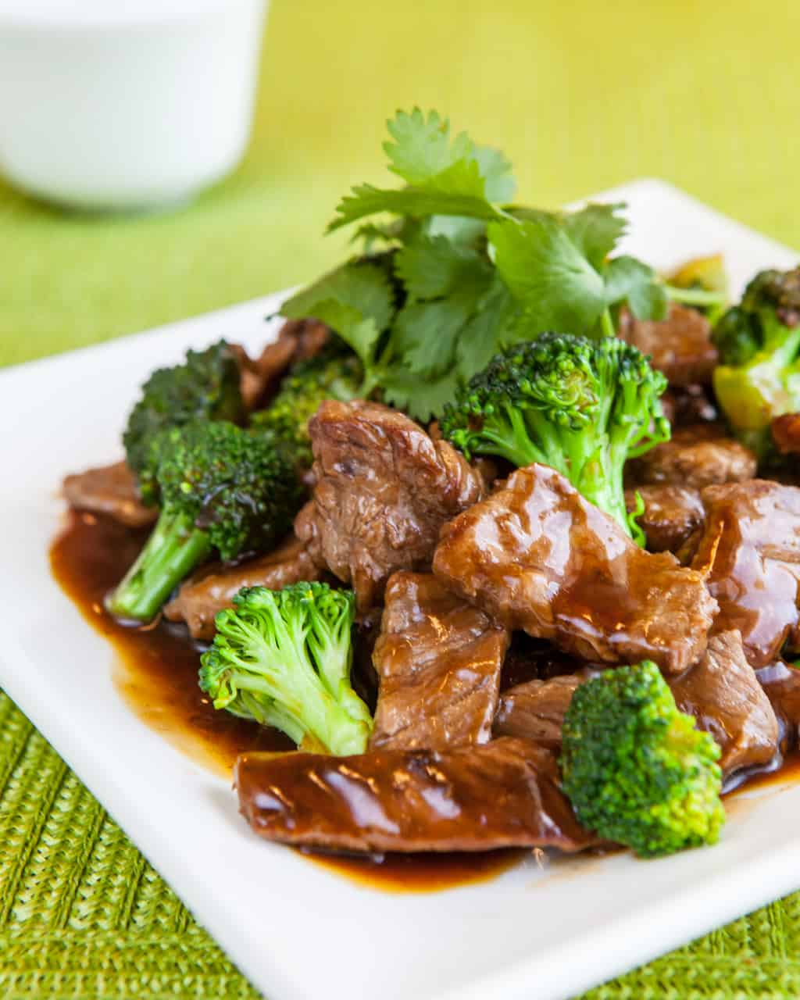

Beef & Broccoli

Description
Beef and Broccoli is an easy, 1-pan, 30-minute meal loaded with fresh broccoli, tender beef, and the best stir fry sauce.
Ingredients
- 2 tbsp. dry sherry or shaoxing wine
- 2 tbsp. unseasoned rice vinegar
- 1/2 tsp. kosher salt
- 1/2 tsp. freshly ground black pepper
- 1/3 c. plus 1/4 c. low-sodium soy sauce, divided
- 2 tbsp. plus 1 1/2 tsp. cornstarch, divided
- 2 tbsp. light brown sugar, divided
- 1 1/2 lb. flank or skirt steak, sliced very thin against the grain
- 4 cloves garlic
- 1 (1/2") piece ginger, peeled
- 2 scallions
- 2 small heads broccoli
- 2/3 c. low-sodium beef broth
- 2 tbsp. oyster sauce
- 2 tsp. sriracha (optional)
- 3 tbsp. vegetable oil, divided
- Toasted sesame seeds and white rice, for serving
Steps
- In a medium bowl, combine sherry, vinegar, salt, pepper, 1/3 cup soy sauce, 1 tablespoon plus 1 1/2 teaspoons cornstarch, and 1 tablespoon brown sugar. Add steak and toss to coat. Let sit 20 minutes.
- Meanwhile, finely chop garlic and ginger. Slice scallions and separate green and white parts. In a small bowl, combine garlic, ginger, and white scallion parts; reserve green parts for serving. Chop broccoli into florets and transfer to another small bowl.
- In a large measuring cup, whisk broth, oyster sauce, sriracha (if using), and remaining 1/4 cup soy sauce, 1 tablespoon cornstarch, and 1 tablespoon brown sugar. When ready to cook, arrange bowls of beef, garlic mixture, broccoli, and stir-fry sauce next to stove.
- In a large skillet over medium-high heat, heat 1 tablespoon oil. Add half of beef and cook, undisturbed, 1 minute, then stir and cook until cooked through and starting to char in some spots, about 1 minute more. Transfer to a plate. Repeat with 1 tablespoon oil and remaining beef. Discard excess marinade.
- Return skillet to medium heat and heat remaining 1 tablespoon oil. Add garlic mixture and cook, stirring occasionally, until fragrant, about 2 minutes. Add broccoli and cook, stirring frequently, until slightly softened, about 1 minute, then add stir-fry sauce. Cover and cook 3 minutes. Uncover, return beef to skillet, and toss to coat. Cook, tossing frequently, until warmed through and broccoli is crisp-tender, 2 to 3 minutes more.
- Divide rice among plates. Top with stir-fry, sesame seeds, and reserved green scallion parts.